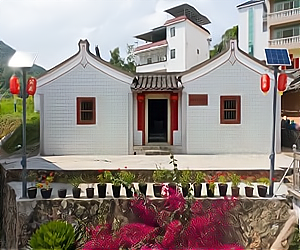
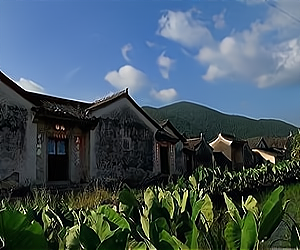
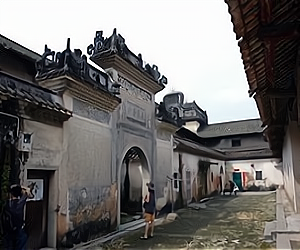
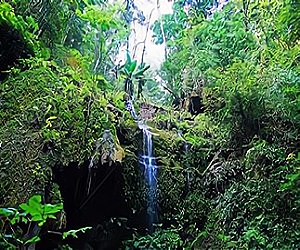
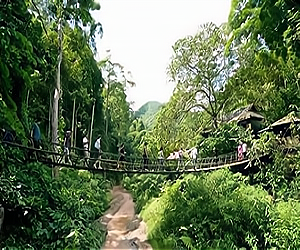
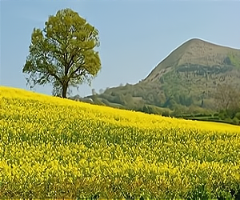
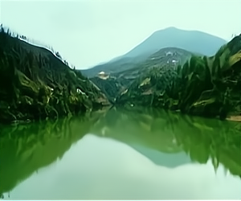
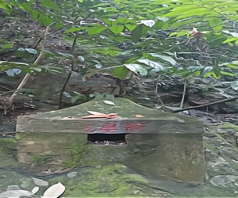
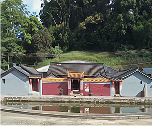
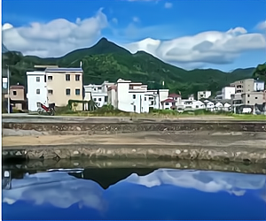

黄花八景










壹
李国平院士故居
李国平院士故居始建于民国初期，是李国平年少时居住的地方，2013年被列为丰顺县重点文物保护单位。故居坐北朝南，为合面屋，砖木结构，硬山顶，内有三厅一天井，共有5个房间，占地面积125平方米。
2007年，商会副会长单位--南华糖业李国辉先生捐资人民币10万元重修了故居。砂田镇党委及镇政府将其布置成李国平院士生平展览馆，里面陈列着院士一生的学术成果及其生前的某些用具以及其亲友、学生提供的不少资料，都相当珍贵。
地址：梅州市丰顺县黄花村
门票：详情咨询景区
开放时间：全天
交通路线参考：丰顺县城出发，沿206国道，到达了丰良镇，转县道X028，经龙岗、大龙华，然后，约在X028县道35KM处，转接上省道S224，又过了几公里，就到了小胜镇口，直行9KM就到了黄花村村道口。
贰
客家特色民居
黄花村客家特色民居保存良好，展现了耕读传家的客家原始风貌，李国平院士故居，“荣辉庐”等是典型的客家传统风格民居，吸引大批游客前来观光，感受黄花村的文化气息，使得“教授村”转变为“旅游村”。
叁
笔峰（笔醮墨池）
笔峰倒映在祠堂前半月形池塘正中央，犹如笔蘸墨砚，寓意黄花村文笔蘸墨人才辈出。
肆
原始森林公园
300多年历史的原始森林公园，不仅有“地球之肺”的美称，还有“天然氧吧”的美称。森林公园植被保存完好，曲径通幽，遍布奇花异木、参天古树，内有奇特的“一榕抱三檀”景观，有李国平院士当年读书时经常就坐的院士石，有莲花观天台和莲花瀑布，水流清澈，别有一番美景。
伍
仰山公祠
仰山公祠，至今有300多年，大门正对笔峰，铜鼓峰，腰子峰，门前配半月形池塘，两公里外的笔峰倒影池塘正中央，犹如古时笔蘸墨砚，意为“文笔蘸墨人才辈出”。
陆
将军庙
黄花村将军庙位于森林公园与黄花天池之间，庙虽小而法力大。据传到将军庙诚心拜祭的人都能心想事成，特别是正在求学的学生，将来一定能金榜题名。
柒
油菜花海
民居依山势而建，房屋前种满了油菜花，盛开时节，黄花满地，蝴蝶飞舞，花开素雅，香味沁人心脾。一排排金黄娇艳的油菜黄花在清风吹拂下轻轻摇曳，绚丽多姿，引来数万蜜蜂循香来采蜜，只听得阵阵嗡嗡蜂鸣声，置身其中，犹如进入花的世界、花的海洋。群蜂飞花间，众蝶舞枝头，举目遍地皆金黄，醉人的油菜花香，衬托着围龙屋、别致的小洋楼和青山绿水，好一幅如诗如画的田园风光！
捌
黄花天池
黄花天池位于原始森林公园顶端，天池水清澈无比，天池内鱼虾成群，群山倒映在水中，碧波粼粼，在天池划船、垂钓，悠闲自在，享受最纯粹清新的自然美景，是娱乐休闲好去处。这一片清澈的天池，仿佛是大地的一面镜子。观望之时不仅让人想起了苏轼所吟唱的“水光潋滟晴方好，山色空蒙雨亦奇。”的诗句。